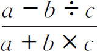
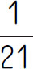
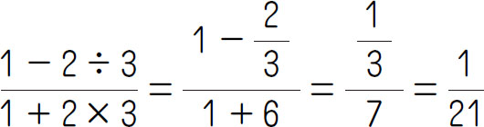
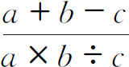
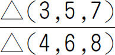

新定义运算是指运用某种特殊符号来表示特定的意义，从而解答某些算式的一种运算．定义新运算中运算符号有：＃、*、※、▽等，有时借用一些已有的运算符号“＋”“－”“×”“÷”，但与四则中的运算符号是有区别的．解答新定义运算，关键是要正确地理解新定义的算式含义，然后严格按照新定义的计算程序，将数值代入，转换为常规的四则运算算式进行计算．
【解题技巧】
严格按照新定义的运算规则，把已知的数代入，转化为加减乘除的运算，然后按照基本运算过程和规律进行运算．
（第八届“走美杯”初赛）定义x ☆y ＝3x ＋7y ，则（1☆1）＋（2☆2）＋（3☆3）＋…＋（10☆10）＝_____．
【答案】 550．
【解析】 原式＝（3×1＋7×1）＋（3×2＋7×2）＋…＋（3×10＋7×10）＝550．
【举一反三1】
定义新运算为a △b ＝（a ＋1）÷b ，求6△（3△4）的值．
（第五届“希望杯”初赛）对不为0的自然数a ，b ，c 规定新运算“☆”：☆（a ，b ，c ）＝

，则☆（1，2，3）＝_____．【答案】

．【解析】 原式＝

．【举一反三2】
（第五届小学希望杯全国邀请赛第2试）对不为0的自然数a ，b ，c 规定符号△的含义：△（a ，b ，c ）＝

，则
＝_____．（第五届“走美杯”决赛）一个数n 的数字中为奇数的那些数字的和记为S （n ），为偶数的那些数字的和记为E （n ），例如S （134）＝1＋3＝4，E （134）＝4．则S （1）＋S （2）＋…＋S （100）＝_____，E （1）＋E （2）＋…＋E （100）＝_____．
【答案】 501，400．
【解析】 从1～100这100个自然数共用数字有9＋90×2＋3＝192（个），其中数字1用到了21次，数字2、3、4、…、9各用到了20次，数字1用到11次，因此，S （1）＋S （2）＋…＋S （100）＝1×21＋3×20＋5×20＋7×20＋9×20＝501．E （1）＋E （2）＋…＋E （100）＝0×11＋2×20＋4×20＋6×20＋8×20＝400．
【举一反三3】
定义两种运算“※”和“#”，对于任意两个整数a 、b 规定：a #b ＝a ＋b -1，a ※b ＝a ×b -2，计算4※［（6#8）#（3※5）］的值为_____．
（第十六届“迎春杯”初赛）规定1※2＝0.1＋0.2＝0.3，2※3＝0.2＋0.3＋0.4＝0.9，5※4＝0.5＋0.6＋0.7＋0.8＝2.6.如果a ※15＝16.5，那么a ＝_____．
【答案】 4．
【解析】 本题定义是第一个数是起始数，第二个数表示个数，最后结果的0.1倍，则a ※15＝［a ＋（a ＋1）＋（a ＋2）＋…＋（a ＋14）］×0.1＝16.5，即（a ＋a ＋14）×15÷2＝165，则a ＝4．
【举一反三4】
已知a ＃b ＝a ÷b ×2＋3，若256＃a ＝19，求a ．
1．（第十一届“希望杯”初赛）规定a △b ＝a ÷（a ＋b ），（11÷5）△1.8＝_____．
2．若A *B 表示（A ＋3B ）×（A ＋B ），求5*7的值．
3．（第一届“希望杯”初赛）定义5×2＝5＋55＝60，7×4＝7＋77＋777＋7777＝8638，推知9×5＝_____．
4．如果a ※b 表示a ×b ＋a ，那么当x ※5比5※x 大100时，x 是多少？
5．对自然数a ，b ，规定a ※b ＝a ＋b －1．（1）计算：（7※8）※6；（2）已知：（5※x ）※x ＝85，求x ．
6．对两个自然数a 和b ，它们的最小公倍数与最大公约数的差，定义为a ☆b ，即a ☆b ＝［a ，b ］-（a ，b ）．比如，10和14的最小公倍数是70，最大公约数是2，那么10☆14＝70-2＝68.（1）求12☆21的值；（2）已知6☆x ＝27，求x 的值．